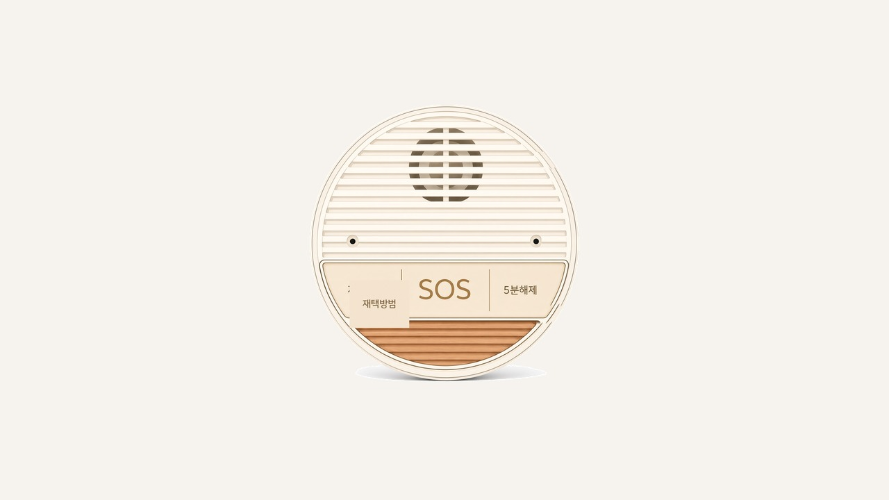
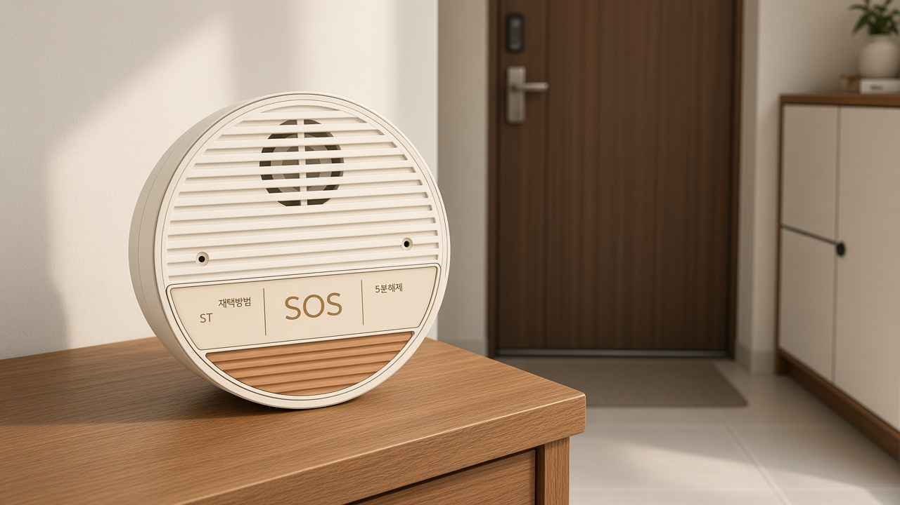
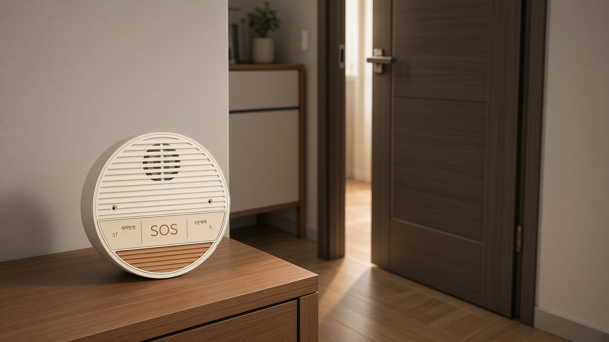
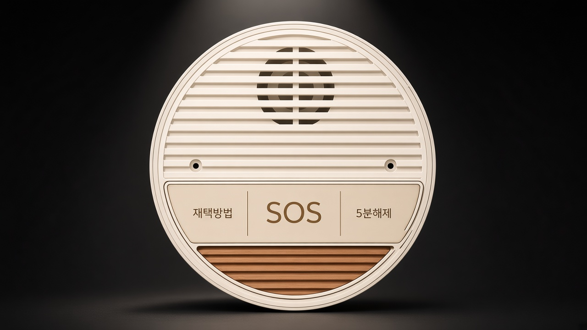

1 / 5
집 안에 두는 안심 본체
재택방범 · SOS · 5분해제 버튼과 부저·마이크가 한곳에 있습니다.

재택방범 · SOS · 5분해제 버튼과 부저·마이크가 한곳에 있습니다.

대기시간 안에 비명 단어가 들리면 사이렌과 보호자 알림으로 이어집니다.

문이 열린 뒤가 가장 취약한 순간입니다. 마이안심이가 그사이를 지킵니다.
사이렌은 앱 「부저 정지」로만 끌 수 있습니다.

왼쪽 재택방범, 가운데 SOS(3초), 오른쪽 5분해제.